Ce tutoriel aura pour but de vous faire découvrir l'univers des fractales en informatique et plus particulièrement celui de l'ensemble de Mandelbrot.
Tout d'abord, qu'est-ce qu'une fractale (ou figure fractale)? Je ne vais pas vous donner la vrai définition qui est tout à fait incompréhensible pour la plupart des personnes. En fait, une fractale est une figure complexe qui possède une infinité de détails, quel que soit l'échelle à laquelle on la regarde. De plus on retrouve souvent le même motif ou un motif similaire dans le motif de la fractale en lui-même. Pour finir, il faut dire qu'une fractale est trop irrégulière pour que l'on puisse la décrire par des termes géométriques habituels.
Afin de comprendre la formule qui définit l'ensemble de Mandelbrot, il faut tout d'abord savoir ce qu'est un nombre complexe.
Un nombre complexe est un nombre qui possède deux parties : une partie réelle et une partie imaginaire. La partie réel est un nombre quelconque appartenant à l'ensemble des réels. La partie imaginaire est aussi un nombre appartenant à l'ensemble des réels.
C'est quoi cette arnaque? Pourquoi on a un nombre composé de deux nombres?
Et bien, le nombre complexe aura pour valeur sa partie réel additionné à sa partie imaginaire, elle-même multipliée par i. Si on note x la partie réel et y la partie imaginaire, le nombre complexe, noté z, sera
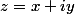
. Notez au passage l’utilisation de x et y, habituellement réservée pour les coordonnés d'un point. La plus grosse difficulté des nombre complexe vient du fait que la seule définition de l'on peut donner de i est que
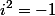
.
Mais, je croyais qu'un nombre au carré était toujours positif o_O ?
C'est vrai pour tous les réels (les nombre que l'on étudie le plus souvent), mais ce n'est pas forcément vrai pour les nombres complexes, à cause de la définition même de i. Il faudra vous y faire. Un exemple de nombre complexe :
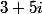
. 3 est la partie réel et 5 la partie imaginaire. i est collé au 5 tout simplement car c'est une multiplication.
Voici quelques exemples d’opérations sur les nombres complexes pour que vous compreniez:
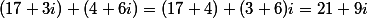
L’addition :
. Comme vous pouvez le voir, il suffit d'additionner les parties réels et les parties imaginaires entre elles pour obtenir le résultat.
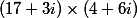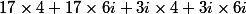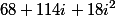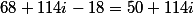
La multiplication :
. D'abord, on développe :
. Ensuite, on rassemble les éléments ensemble et on simplifie :
. Et là, miracle :
, donc on peut continuer à simplifier :
.
Les nombres complexes peuvent être utilisés pour représenter un point dans un repère. Par exemple, le point de coordonné
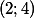
peut être représenté par le nombre complexe
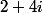
. On vois que la partie réel du nombre complexe correspond à l'abscisse du point et la partie imaginaire à l'ordonnée. Dans la cas général, le nombre complexe
correspond au point M de coordonnées
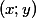
. On dit que z est l'affixe de M. En continuant là-dessus, il faut savoir que la distance OM correspond au module du nombre z. On peut donc en déduire que le module de z, noté
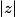
, est égal à
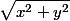
. Retenez bien cette notion, c'est important pour la suite.
C'était la partie la plus dur, donc si vous avez compris tout ça, le reste devrait rester assez simple.
Les suites
Le second point de math qu'il faut connaitre est les suites.
Citation : Wikipédia
En mathématiques, une suite est une famille d'éléments indexée par les entiers naturels.
La définition de Wikipédia est plus ou moins claire, mais le plus important est la partie en gras. Par exemple, si on parle de la suite
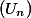
, le nom de la suite est
et l'index est
.
Une suite peut être définie en fonction de
. C'est le cas le plus simple, en voici un exemple :
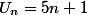
. C'est un peu comme une fonction, sauf que
est forcément un entier positif :
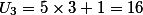
. Mais, il existe une autre méthode pour définir une suite : on définit le premier terme de la suite et une formule de récurrence qui va nous permettre de calculer un terme en fonction du précédent. Un exemple : le premier terme
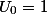
et la formule de récurrence
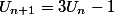
. Pour calculer
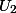
, on va procéder comme ceci :
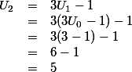
Rien de bien compliqué au final si on a déjà compris le principe des fonctions.
Si vous êtes arrivés ici vivants et que vous avez compris l'essentiel, la suite de ce tutoriel devrais vous sembler très simple.
L'exemple de l'ensemble de Mandelbrot donné dans l'introduction peut être trompeur, car il y a plein de couleurs, mais en réalité la fractale n'est qu'une figure. Sur l'image ci-dessous, on voit clairement la fractale en noir.
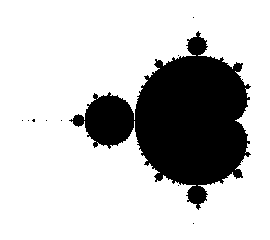
La grosse forme qui ressemble presque à un cercle est appelée cardioïde (vous avez une petite explication sur Wikipédia). Comme vous pouvez le voir, le même cercle à gauche de la cardioïde est lui-même entouré de cercles de différentes tailles se répète tout au long de la fractale et ce, de manière infinie. Une autre caractéristique, c'est les petits points qui sont à gauches de la fractale. Normalement, ils forment un segment qui s'arrête brusquement (vous pouvez le voir sur la fractale en couleur). Et bien, si on zoom sur ce segment on retrouvera toujours la fractale et ce quel que soit le zoom que l'on prend.
La formule
En se servant des connaissances que vous avez acquises juste avant, vous pouvez enfin comprendre la formule qui définit l'ensemble de Mandelbrot.
Citation : wikipedia
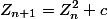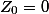
L'ensemble de Mandelbrot est une fractale qui est définie comme l'ensemble des points
du plan complexe pour lesquels la suite récurrente définie par :
et la condition
ne tend pas vers l'infini (en module).
Pour faire plus simple, on regarde chaque point du plan complexe (de l'image) et on regarde si la suite tend vers l'infini en module ( = si le module de
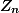
pour
très grand se rapproche de l'infini). En réalité, ce genre de calcul est bien compliqué pour notre pauvre ordinateur et donc, nous avons seulement besoin de tester si le module de
dépasse 2 à un moment. S'il ne le dépasse pas, c'est qu'il fait partie de la fractale.
Mais comment savoir s'il ne le dépasse pas?
On va tout simplement regarder si il le dépasse jusqu'à un certain rang assez grand pour que l'on puisse raisonnablement penser qu'il ne le dépassera pas ensuite. C'est le rang (appelé nombre d'itération) que l'on va choisir qui va fixer en partie la qualité du rendu final. Si le nombre d'itération n'est pas assez grand, il va considérer trop de points comme faisant partie de la fractale, alors que si le nombre d'itération est trop grand, la fractale aura tendance à être trop nette (c'est un peu le problème de la fractal en noir et blanc que je vous ai montré juste au-dessus).
Bon, maintenant que vous savez comment définir la fractale de Mandelbrot, on va passer à la pratique : on va créer l'algorithme qui va nous permettre de dessiner la fractale. Pourquoi un algorithme plutôt qu'un code? Tout simplement car on peut dessiner l'ensemble de Mandelbrot avec quasiment tous les langages, donc pour que tout le monde puisse le traduire, on va définir une méthode qui doit marcher quel que soit le langage que l'on utilise. Ce sera ensuite à vous de le traduire dans votre langage favori.
Le premier jet est assez simple :
définir iteration_max = 50
Pour chaque point de coordonnées (x; y) du plan :
définir c = x + iy
définir z = 0
définir i = 0
Faire
z = z*z + c
i = i+1
Tant que module de z < 2 et i < iteration_max
si i = iteration_max
dessiner le pixel correspondant au point de coordonné (x; y)
finSi
finPour
Comme vous pouvez le voir, ce code est très simple, mais sera difficilement traduisible si on utilise un langage qui ne comprend pas les nombres complexes. C'est pour cela que l'on va définir 2 variables pour le nombre z : une pour la partie réelle (
) et une pour la partie imaginaire (
). On va faire de même pour c. Le calcul z = z*z + c devient donc :
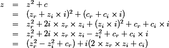
Il ne reste plus qu'à séparer la partie entière et la partie imaginaire :
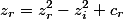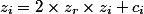
De plus, au lieux de calculer le module de z et le comparer à 2, on va juste calculer le carré de ses composantes (partie réelle et partie imaginaire) et comparer le résultat à 4 car :
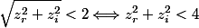
On peut donc changer le code comme ceci :
définir iteration_max = 50
Pour chaque point de coordonnées (x; y) du plan :
définir c_r = x;
définir c_i = y;
définir z_r = 0
définir z_i = 0
définir i = 0
Faire
définir tmp = z_r
z_r = z_r*z_r - z_i*z_i + c_r
z_i = 2*z_i*tmp + c_i
i = i+1
Tant que z_r*z_r + z_i*z_i < 4 et i < iteration_max
si i = iteration_max
dessiner le pixel correspondant au point de coordonné (x; y)
finSi
finPour
On stocke z_r dans une variable temporaire pour éviter d'utiliser la nouvelle valeur de z_r dans le calcul de z_i.
Rien ne vous choque? et bien ça devrait. En informatique, on va utiliser une image pour dessiner la fractale, sauf que là on utilise un plan pour les coordonnées de x et y. Il va donc falloir faire correspondre ces deux grandeurs. Tout d'abord, il faut savoir que l'ensemble de Mandelbrot est toujours compris entre -2.1 et 0.6 sur l'axe des abscisse et entre -1.2 et 1.2 sur l'axe des ordonnées.
Il y a deux techniques pour gérer la différence de taille entre le plan et l’image utilisée.
La plus simple consiste à définir la zone que l'on va dessiner et une valeur de zoom. On calculera ensuite la taille de l'image à partir de ces informations :
// on définit la zone que l'on dessine. Ici, la fractale en entière
définir x1 = -2.1
définir x2 = 0.6
définir y1 = -1.2
définir y2 = 1.2
définir zoom = 100 // pour une distance de 1 sur le plan, on a 100 pixel sur l'image
définir iteration_max = 50
// on calcule la taille de l'image :
définir image_x = (x2 - x1) * zoom
définir image_y = (y2 - y1) * zoom
Pour x = 0 tant que x < image_x par pas de 1
Pour y = 0 tant que y < image_y par pas de 1
définir c_r = x / zoom + x1
définir c_i = y / zoom + y1
définir z_r = 0
définir z_i = 0
définir i = 0
Faire
définir tmp = z_r
z_r = z_r*z_r - z_i*z_i + c_r
z_i = 2*z_i*tmp + c_i
i = i+1
Tant que z_r*z_r + z_i*z_i < 4 et i < iteration_max
si i = iteration_max
dessiner le pixel de coordonné (x; y)
finSi
finPour
finPour
Avec ce code, on obtiendra une image de 270*240 pixels. Les avantages de cette technique :
On définit soit-même l'échelle (le zoom) que l'on veut
La fractale à toujours les mêmes proportions
L’inconvénient : on ne connait pas la taille finale de l'image sans la calculer sois-même avant. Il y a donc des risques de se retrouver avec une image bien trop grande (et l'ordi va patauger pour dessiner la fractale) ou une image bien trop petite.
La deuxième technique est tout simplement de définir la zone que l'on veut dessiner et la taille de l'image. Le zoom sera calculé en fonction de ces valeurs :
// on définit la zone que l'on dessine. Ici, la fractale en entière
définir x1 = -2.1
définir x2 = 0.6
définir y1 = -1.2
définir y2 = 1.2
définir image_x = 270
définir image_y = 240
définir iteration_max = 50
// on calcule la taille de l'image :
définir zoom_x = image_x/(x2 - x1)
définir zoom_y = image_y/(y2 - y1)
Pour x = 0 tant que x < image_x par pas de 1
Pour y = 0 tant que y < image_y par pas de 1
définir c_r = x / zoom_x + x1
définir c_i = y / zoom_y + y1
définir z_r = 0
définir z_i = 0
définir i = 0
Faire
définir tmp = z_r
z_r = z_r*z_r - z_i*z_i + c_r
z_i = 2*z_i*tmp + c_i
i = i+1
Tant que z_r*z_r + z_i*z_i < 4 et i < iteration_max
si i = iteration_max
dessiner le pixel de coordonné (x; y)
finSi
finPour
finPour
L'avantage : on a une image de la taille que l'on veut, donc il n'y a pas de risque de se retrouver avec une image de 10000*10000.
L'inconvénient : à moins de calculer soit-même la taille de l'image en fonction de la taille de la zone à dessiner (et là, ça reviendrait à la première technique), on se retrouve souvent avec une image complètement disproportionnée.
Voilà pourquoi je préfère utiliser la première technique, quitte à avoir une validation qui demande si on veut vraiment dessiner la fractale en indiquant la taille de l'image.
À partir de ce stade, vous pouvez déjà faire un rendu de la fractale. Voici ce que j'ai fait en recopiant le code :
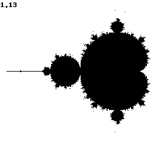
Le chiffre en haut à gauche, c'est le temps de génération en secondes. C'est un peu long, mais en grosse partie à cause de PHP qui n'est pas vraiment adapté. D'après mon expérience, en utilisant un langage bas niveau tel que C/C++, on peut arriver à des résultats 10 à 20 fois plus rapide.
D’ailleurs, en parlant du PHP, voici le code que j'ai utilisé pour générer la fractale :
Nous y voilà enfin, dans la partie qui vous permettra de faire de super beaux rendus qui feront craquer tout le monde (ou pas). L'intégration de la couleur dans la fractale se fait de manière très simple : vous avez remarqué que quand on sort de la boucle qui teste si
tend vers l'infini en module, on ne dessine rien? Et bien il suffit de dessiner le pixel avec une couleur en fonction du nombre d'itération que l'on a mis pour trouver que
tend vers l'infini en module.
On va prendre l'exemple simple de la fractale entourée de bleu. Donc plus on met d'itération, plus le bleu est clair.
définir x1 = -2.1
définir x2 = 0.6
définir y1 = -1.2
définir y2 = 1.2
définir zoom = 100 // pour une distance de 1 sur le plan, on a 100 pixel sur l'image
définir iteration_max = 50
définir image_x = (x2 - x1) * zoom
définir image_y = (y2 - y1) * zoom
Pour x = 0 tant que x < image_x par pas de 1
Pour y = 0 tant que y < image_y par pas de 1
définir c_r = x / zoom + x1
définir c_i = y / zoom + y1
définir z_r = 0
définir z_i = 0
définir i = 0
Faire
définir tmp = z_r
z_r = z_r*z_r - z_i*z_i + c_r
z_i = 2*z_i*tmp + c_i
i = i+1
Tant que z_r*z_r + z_i*z_i < 4 et i < iteration_max
si i = iteration_max
dessiner en noir le pixel de coordonné (x; x)
sinon
dessiner avec couleur rgb(0, 0, i*255/iterations_max) le pixel de coordonné (x; x)
finSi
finPour
finPour
Voici le rendu (mêmes paramètres que pour le précédent) :
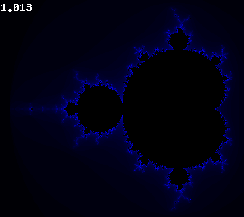
C'est loin d'être très beau, mais la base est là. Sachez que pour trouver les bons paramètres et les bonnes couleurs, il vous faudra beaucoup de tests souvent infructueux. Pensez tout de même que souvent les plus belles fractales ont des dégradés de plusieurs couleurs. Ici, on ne va que du noir vers le bleu. Mais on peut très bien aller du noir vers le bleu, puis vers le blanc. On peut même faire un cycle de couleur : noir -> bleu -> blanc -> vert -> noir et on recommence.
Si vous regardez bien pour le premier ensemble de mandelbrot que je vous ai montré (dans l'introduction), le créateur a utilisé le dégradé bleu foncé -> blanc -> jaune -> violet -> bleu -> blanc. Vous n'êtes pas non plus obligé d'utiliser un dégradé linéaire, à vous de laisser parler votre imagination.
Voici le code PHP de la fractale en couleur :
<?php
$x1 = -2.1;
$x2 = 0.6;
$y1 = -1.2;
$y2 = 1.2;
$zoom = 100;
$iterations_max = 50;
$image_x = ($x2 - $x1)*$zoom;
$image_y = ($y2 - $y1)*$zoom;
// on créé l'image et les couleurs, inutile ici de remplire l'image vu que on dessinera tous les pixels
$image = imagecreatetruecolor($image_x, $image_y);
$blanc = imagecolorallocate($image, 255, 255, 255);
$noir = imagecolorallocate($image, 0, 0, 0);
imagefill($image, 0 ,0 , $blanc);
// on définit la liste des couleurs du dégradé ici, ça évite de devoir faire appel à imagecoloralocate à chaque pixel
$couleurs = array();
for($i = 0; $i < $iterations_max; $i++)
$couleur[$i] = imagecolorallocate($image, 0, 0, $i*255/$iterations_max);
$debut = microtime(true);
for($x = 0; $x < $image_x; $x++){
for($y = 0; $y < $image_y; $y++){
$c_r = $x/$zoom+$x1;
$c_i = $y/$zoom+$y1;
$z_r = 0;
$z_i = 0;
$i = 0;
do{
$tmp = $z_r;
$z_r = $z_r*$z_r - $z_i*$z_i + $c_r;
$z_i = 2*$tmp*$z_i + $c_i;
$i++;
} while($z_r*$z_r + $z_i*$z_i < 4 AND $i < $iterations_max);
if($i == $iterations_max)
imagesetpixel($image, $x, $y, $noir);
else
imagesetpixel($image, $x, $y, $couleur[$i]);
}
}
$temps = round(microtime(true) - $debut, 3);
imagestring($image, 3, 1, 1, $temps, $blanc);
header('Content-type: image/png');
imagepng($image);
Finalement, pour ceux qui ont besoin de plus de performances, voici le code en C++ avec SFML (merci à Gigotdarnaud de m'avoir fourni le code) :
#include <iostream>
#include <SFML/Graphics.hpp>
sf::Mutex mutex;
bool threadRun;
class Render : public sf::Thread
{
// Cette classe threadée va s'occuper des calculs, afin de ne pas bloquer l'affichage
public:
Render(sf::Image** _im, unsigned int _zoom, unsigned int _max_iteration, bool _inColor=false)
{
*_im=&im; //On utilise un pointeur de pointeur afin que le thread principal puisse afficher l'image
inColor=_inColor;
x1=-2.1;
x2=0.6;
y1=-1.2;
y2=1.2;
zoom=_zoom;
iteration_max=_max_iteration;
image_x = static_cast<unsigned int>((x2 - x1) * zoom);
image_y = static_cast<unsigned int>((y2 - y1) * zoom);
std::cout << "Image size : (" << image_x << ";" << image_y << ")" << std::endl;
im=sf::Image(image_x, image_y, sf::Color::Black); //On crée une image vide (noire)
threadRun=true; //Cette variable globale sert à stopper le thread lorsque l'on ferme la fenêtre.
}
private:
virtual void Run() //La fonction principale du thread de rendu
{
for(unsigned int x=0;x<image_x&&threadRun;x++) //On parcourt l'axe des X
{
for(unsigned int y=0;y<image_y&&threadRun;y++) //On parcourt l'axe des Y
{
double c_r=x/static_cast<double>(zoom)+x1;
double c_i=y/static_cast<double>(zoom)+y1;
double z_r=0;
double z_i=0;
double i=0;
do
{
double tmp=z_r;
z_r=z_r*z_r-z_i*z_i+c_r;
z_i=2*z_i*tmp+c_i;
++i;
}
while(z_r*z_r+z_i*z_i<4&&i<iteration_max&&threadRun);
if(threadRun)
{
mutex.Lock(); //On verouille l'image, afin que les deux threads n'entrent pas en colision
if(inColor)
{
if(i!=iteration_max)
{
im.SetPixel(x, y, sf::Color(0, 0, static_cast<int>(i*255/iteration_max))); //On change la couleur du pixel
}
}
else
{
if(i==iteration_max)
im.SetPixel(x, y, sf::Color::White);
}
mutex.Unlock(); //Et on dévérouille
}
}
}
if(threadRun)
{
//Si l'on est arrivé ici, c'est que l'on a calculé tout ce qui était calculable.
std::cout << "Render is over (" << elapsed.GetElapsedTime() << "s) ! Saving..."<<std::endl;
im.SaveToFile("Fractal.png");
std::cout << "Saved in \"Fractal.png\""<<std::endl;
}
else
{
//Si on est là, c'est que le rendu a été stoppé prématurément par l'utilisateur.
std::cout << "Rendering aborded."<<std::endl;
}
}
double x1;
double x2;
double y1;
double y2;
unsigned int zoom;
unsigned int iteration_max;
unsigned int image_x;
unsigned int image_y;
sf::Clock elapsed; //Cet objet servira à déterminer le temps de rendu à postériori
bool inColor;
sf::Image im;
};
int main()
{
//On crée la fenetre, on prépare le sprite et l'image...
const unsigned int RESO_X=800;
const unsigned int RESO_Y=600;
sf::RenderWindow App(sf::VideoMode(RESO_X, RESO_Y, 32), "Fractales");
App.SetFramerateLimit(60);
sf::Image* ima=NULL;
Render rend(&ima, 2500, 500, true); //On créé l'objet du rendu, en lui donnant les paramètres de la fractale (zoom, itérations max, et couleur)
sf::Sprite spr;
spr.SetImage(*ima);
//Cet objet sert à limiter l'appel aux fonctions d'affichage, qui bloquent le thread de rendu à cause des mutexs.
sf::Clock clock;
const float time = 0.25;
//Cet objet sert à déterminer le zoom de la vue, la position de la caméra, etc. Elle n'a qu'une influence sur la fenêtre, la fractale est toujours la même
sf::View view(sf::Vector2f(ima->GetWidth()/2,ima->GetHeight()/2), sf::Vector2f(RESO_X/2,RESO_Y/2));
App.SetView(view);
//On lance le thread de rendu
rend.Launch();
while(App.IsOpened())
{
sf::Event Event;
while (App.GetEvent(Event)) //On parcourt la pile des évenements
{
if (Event.Type==sf::Event::Closed)
{
App.Close();
}
else if(Event.Type==sf::Event::MouseWheelMoved) //Zoom/Dézoom à la molette de souris
{
if(Event.MouseWheel.Delta>0)
{
view.Zoom(1.5);
}
else
{
view.Zoom(0.75f);
}
}
else if(Event.Type==sf::Event::KeyPressed) //Déplacement
{
if(Event.Key.Code == sf::Key::Left)
{
view.Move(-10,0);
}
else if(Event.Key.Code == sf::Key::Right)
{
view.Move(10,0);
}
else if(Event.Key.Code == sf::Key::Up)
{
view.Move(0,-10);
}
else if(Event.Key.Code == sf::Key::Down)
{
view.Move(0,10);
}
}
}
if(clock.GetElapsedTime()>time) //Si suffisament de temps s'est écoulé depuis le dernier affichage
{
clock.Reset();
mutex.Lock(); //On verouille l'image
App.Draw(spr); //On l'affiche
App.Display(); //On rafraichit l'écran
mutex.Unlock(); //On rend la main au thread de rendu
}
}
threadRun=false; //Avant de quitter, il faut penser à stopper le thread de rendu.
return 0;
}
Étant donné que la question m'a été posés à plusieurs reprises, je vais vous expliquer comment faire pour zoomer sur l'ensemble de mandelbrot.
Globalement, il n'y a pas de technique particulière pour obtenir un zoom sur une zone de la fractale, il s'agit juste de changer certains paramètres. Le tout, c'est de savoir lesquels changer et de quel manière.
Le zoom
Le premier paramètre que l'on aurais tendance à changer si on veut zoomer, c'est le zoom (logique ^^ ). Donc oui, il faut l'augmenter, mais si on n'augmente que le zoom, on va se retrouver avec une image d'autant plus grand (et donc plus longue à calculer) que on aura augmenté le zoom, et ce n'est pas forcément ce que l'on veut.
Les coordonnés du plan complexe
Les quatre premiers paramètres que l'on définit sont les coordonnés de la zone que l'on veut tracer. Voici à quoi ils correspondent :
x1 correspond à la limite gauche de l'image
x2 correspond à la limite droite de l'image
y1 correspond à la limite du haut de l'image
y2 correspond à la limite du bas de l'image
Par exemple, si on augmente x1, l'image sera plus petite vers la droite. En diminuant x2, l'image sera petite vers la gauche. Et de même pour y1 et y2.
Le nombre d'itération maximum
Enfin, le nombre d'itération maximum est aussi important à faire augmenter quand on zoom beaucoup, car plus on zoom, plus il faut être précis.
Pour illustrer ce que l'on a vu au dessus, si je vous demande une image de quart en haut à droite de la fractal de la même taille que les autres images, il faudra : doubler le zoom, augmenter x1, diminuer y2 et un peu augmenter le nombre maximum d'itération. On obtient donc :
zoom = 200
x1 = -0.75
y2 = 0
iteration_max = 100
Et voici le résultat :
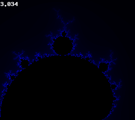
De même si vous voulez zoomer sur un point du plan complexe de coordonné (x; y) en particulier, il faudra juste définir x1 = x-h, x2 = x+h, y1 = y-h et y2 = y+h. Avec h un valeur que vous fixerez vous-même en sachant que plus elle est petite, plus vous zoomerez sur ce point en particulier. Bien évidement, il faudra augmenter en conséquence le zoom et le nombre d'itérations.
Maintenant que vous avez les bases pour créer la fractale de mandelbrot, dites-vous qu'il y a un bon nombre de fractales qui sont basés sur le même principe.
Les ensembles de Julia
Les ensembles de Julia sont basés sur le même principe que l'ensemble de Mandelbrot. La formule est exactement la même (
), seul les valeurs de départ changent :
sera un nombre complexe fixe de votre choix (essayer de le prendre dans le plan complexe de l'ensemble de Mandelbrot) et
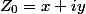
. La première fractale montrée dans le tutoriel est un ensemble de Julia. Sachez que si
est situé dans la fractale de Mandelbrot, alors l'ensemble de Julia sera connexe, c'est-à-dire que la fractale sera d'un bloc. Alors que si
n'est pas dans la fractale de Mandelbrot, l'ensemble de Julia sera formée de points non connectés.
Voici l'algorithme :
définir x1 = -1
définir x2 = 1
définir y1 = -1.2
définir y2 = 1.2
définir zoom = 100
définir iteration_max = 150
définir image_x = (x2 - x1) * zoom
définir image_y = (y2 - y1) * zoom
Pour x = 0 tant que x < image_x par pas de 1
Pour y = 0 tant que y < image_y par pas de 1
définir c_r = 0.285
définir c_i = 0.01
définir z_r = x / zoom + x1
définir z_i = y / zoom + y1
définir i = 0
Faire
définir tmp = z_r
z_r = z_r*z_r - z_i*z_i + c_r
z_i = 2*z_i*tmp + c_i
i = i+1
Tant que z_r*z_r + z_i*z_i < 4 et i < iteration_max
si i = iteration_max
dessiner le pixel de coordonné (x; y)
finSi
finPour
finPour
C'est les valeurs de c_r et c_i qui vont déterminer la forme de l'ensemble. Avec les valeurs que j'ai mises dans l'algorithme, vous devriez obtenir la même forme que l'ensemble de julia présenté dans l'introduction. Notez aussi que les ensembles de julia sont centrés sur l’origine du repère, donc il faut modifier les coordonnés de x1, x2, y1 et y2 en conséquence. Si vous prenez (-1.5; 1.5) pour x et y, vous devriez toujours avoir l'ensemble en entier.
Vous pouvez aussi rajouter des couleurs de la même manière que pour l'ensemble de Mandelbrot. Voilà ce que j'obtient avec exactement le même dégradé que pour l'ensemble de mandelbrot :
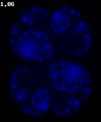
Buddhabrot
Voilà une fractale qui a vraiment fait parler d'elle. En effet, elle ressemble beaucoup à un bouddha en train de méditer. Si vous voulez des exemples sur internet, vous pouvez en trouver beaucoup. La méthode de génération est proche de celle de la fractale de Mandelbrot, à la différence prêt qu'au lieu de dessiner les points appartenant à l'ensemble de Mandelbrot, on va dessiner le chemin pris par la suite avant quelle diverge (que son module ne dépasse pas 2). Dans ce tutoriel, on parcourra tous les points de l'image, mais en théorie on devrais prendre les points au hasard sur le plan complexe. Un petit code pour que vous compreniez mieux :
définir x1 = -2.1
définir x2 = 0.6
définir y1 = -1.2
définir y2 = 1.2
définir zoom = 100
définir iteration_max = 100
définir image_x = (x2 - x1) * zoom
définir image_y = (y2 - y1) * zoom
// un tableau que l'on va incrémenter à chaque fois que la suite Z_n passera par un point.
définir pixels comme un tableau 2D de image_x cases sur image_y cases avec toutes les cases initialisés à 0
// en théorie, on devrait faire une seul boucle dans laquelle on devrait prendre les coordonnés (x; y) au hasard.
Pour x = 0 tant que x < image_x par pas de 1
Pour y = 0 tant que y < image_y par pas de 1
définir c_r = x / zoom + x1
définir c_i = y / zoom + y1
définir z_r = 0
définir z_i = 0
définir i = 0
définir tmp_pixels comme une liste de coordonnées
Faire
définir tmp = z_r
z_r = z_r*z_r - z_i*z_i + c_r
z_i = 2*z_i*tmp + c_i
i = i+1
ajouter les coordonnées ((z_r-x1)*zoom; (z_i-y1)*zoom) au tableau tmp_pixels
Tant que z_r*z_r + z_i*z_i < 4 et i < iteration_max
si i != iteration_max
Pour chaque valeurs pixel de tmp_pixels
si la case pixels[pixel[0]][pixel[1]] existe
on incrémente la case en question
finSi
finPour
finSi
finPour
finPour
Pour chaque case de coordonnée (x; y) de l'image
Dessiner le pixel de coordonnée (x; y) avec la couleur rgb(min(pixels[x][y], 255), min(pixels[x][y], 255), min(pixels[x][y], 255))
finPour
Avec ce code, plus la suite
passe par un point, plus il sera clair. Voici le résultat que j'obtient (après quelques modifications des paramètres et une rotation de 90° vers la droite) :
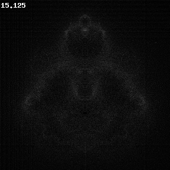
Comme vous pouvez le voir, c'est beaucoup plus long que pour la génération de la fractale de Mandelbrot, mais c'est en partie due à une augmentation de la taille et du nombre d'itérations.
Pour avoir des couleurs, la plupart du temps, on créer un tableau par partie de la couleur (rouge, vert et bleu) et on change le nombre d'itération maximal pour chaque tableau. Il faut de grandes différences entre les itérations max pour avoir réellement de la couleur. Comme je sens que vous n'avez pas tout compris, je vous donne l'algorithme :
définir x1 = -2.1
définir x2 = 0.6
définir y1 = -1.2
définir y2 = 1.2
définir zoom = 100
définir iteration_rouge = 100
définir iteration_vert = 1000
définir iteration_bleu = 10000
définir iteration_max = max(iteration_rouge, iteration_vert, iteration_bleu)
définir image_x = (x2 - x1) * zoom
définir image_y = (y2 - y1) * zoom
définir pixels_rouge comme un tableau 2D de image_x cases sur image_y cases avec toutes les cases initialisés à 0
définir pixels_vert comme un tableau 2D de image_x cases sur image_y cases avec toutes les cases initialisés à 0
définir pixels_bleu comme un tableau 2D de image_x cases sur image_y cases avec toutes les cases initialisés à 0
// en théorie, on devrait faire une seul boucle dans laquelle on devrait prendre les coordonnés (x; y) au hasard.
Pour x = 0 tant que x < image_x par pas de 1
Pour y = 0 tant que y < image_y par pas de 1
définir c_r = x / zoom + x1
définir c_i = y / zoom + y1
définir z_r = 0
définir z_i = 0
définir i = 0
définir tmp_pixels comme une liste de coordonnées
Faire
définir tmp = z_r
z_r = z_r*z_r - z_i*z_i + c_r
z_i = 2*z_i*tmp + c_i
i = i+1
ajouter les coordonnées ((z_r-x1)*zoom; (z_i-y1)*zoom) au tableau tmp_pixels
Tant que z_r*z_r + z_i*z_i < 4 et i < iteration_max
si i < iteration_rouge
Pour les iteration_rouge premières valeurs pixel de tmp_pixels
si la case pixels_rouge[pixel[0]][pixel[1]] existe
on incrémente la case en question
finSi
finPour
finSi
si i < iteration_vert
Pour les iteration_vert premières valeurs pixel de tmp_pixels
si la case pixels_vert[pixel[0]][pixel[1]] existe
on incrémente la case en question
finSi
finPour
finSi
si i < iteration_bleu
Pour les iteration_bleu premières valeurs pixel de tmp_pixels
si la case pixels_bleu[pixel[0]][pixel[1]] existe
on incrémente la case en question
finSi
finPour
finSi
finPour
finPour
Pour chaque pixel de coordonnée (x; y) de l'image
Dessiner le pixel de coordonnée (x; y) avec la couleur rgb(min(pixels_rouge[x][y], 255), min(pixels_vert[x][y], 255), min(pixels_bleu[x][y], 255))
finPour
Voilà, c'est quand même un brin plus compliqué que pour la fractale de Mandelbrot ^^ . Ne soyez donc pas étonné de ne pas comprendre ça du premier coup, sachant que j'ai moi-même mis pas mal de temps à comprendre comment il fallait faire. Et il n'y a pas d'image cette fois-ci car je n'ai pas réussi à avoir un truc correcte à vous présenter, si vous voulez trouvez des images, faite la recherche "buddhabrot" sur google image, vous aurez plein d'images.
Mandelblub
Le Mandelblub est un essai de transformation de la fractale de Mandelbrot en 3D. Étant donné que cela dépasse largement mes compétences, je vais vous laisser 2 liens qui permettront aux plus gourmands d'entre vous de satisfaire leur appétit. Le premier est un article en anglais sur le Mandelblub, il présente de très nombreuses images de cette fractale, vous pourrez donc apprécier la page sans connaitre un mot d'anglais : http://www.skytopia.com/project/fractal/mandelbulb.html. Le deuxième est un article en français qui explique en détail la définition du mandelblub et qui donne même une technique de rendu 3D pour les fractales : http://images.math.cnrs.fr/Mandelbulb.html
Nous voici à la fin du tutoriel. Vous devriez être maintenant capable de dessiner des fractales en connaissant leur formule.
Si vous n'avez pas compris un point ou qu'il vous semble obscure, merci de me le signaler afin que ce tutoriel soit le plus accessible possible.
{kind=link}
{kind=link}
{kind=link}